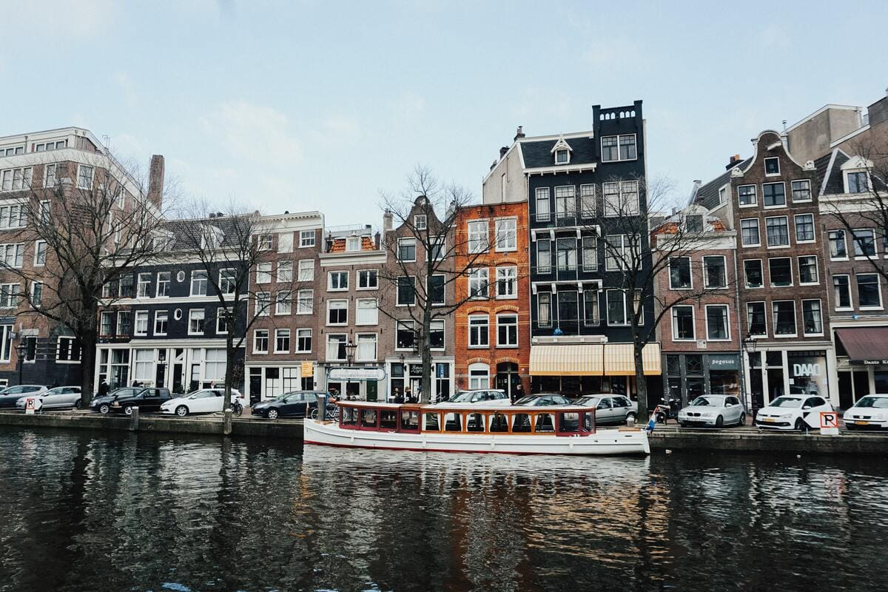

Comida Favorita
- O frango à parmegiana é um prato clássico da culinária brasileira, feito com peito de frango empanado e frito, coberto com molho de tomate e bastante queijo derretido, geralmente acompanhado de arroz e batata frita. Crocante por fora, macio por dentro e cheio de sabor, é uma opção reconfortante e muito popular em restaurantes e lanches caseiros.
Hobby

Jogar no computador
- Jogar no computador é mergulhar em um universo próprio, onde cada desafio e conquista traz uma sensação de excitação e prazer. É um momento de descanso da rotina, de explorar mundos imaginários ou testar habilidades estratégicas, proporcionando diversão, adrenalina e, muitas vezes, uma sensação de realização pessoal.
Lugar que quero conhecer
Motivo:
- Minha irmã foi para a Holanda alguns anos atrás, e desde então sempre falava com tanto entusiasmo sobre o país que dava vontade de ir junto. Ela contava sobre os canais, os moinhos, as ruas cheias de vida e até das pequenas coisas do dia a dia que a encantavam. Ver as fotos que ela mandava e ouvir suas histórias só aumentava minha vontade de conhecer tudo aquilo de perto. Sempre sonhei em viver um pouco daquilo que ela viveu e sentir na pele a experiência que ela descrevia com tanto carinho.
Jurassic Park - O Park dos Dinossauros
"Bem vindos ao Jurassic Park" - John Hammond
Personagens
- John Hammond
- Alan Grant
- Ellie Sattler
- Richard Attenborough
- Sam Neil
- Laura Dern
Atores
Mc PH
História
Mc PH é um artista do cenário do funk brasileiro que conquistou espaço com seu estilo autêntico e letras que misturam vivências pessoais e temas do cotidiano. Ele tem atraído cada vez mais fãs, tornando-se uma das vozes em ascensão no gênero.
Gosto do Mc PH porque suas músicas têm uma batida envolvente e letras que transmitem energia e autenticidade. Além disso, ele consegue criar uma conexão com o público jovem, trazendo emoção e diversão em cada som.
Músicas Favoritas
- Ballena (feat. Pedro Lotto & Fepache)
- Tenho Que Me Decidir
- Os Bico Tão Se Perguntando